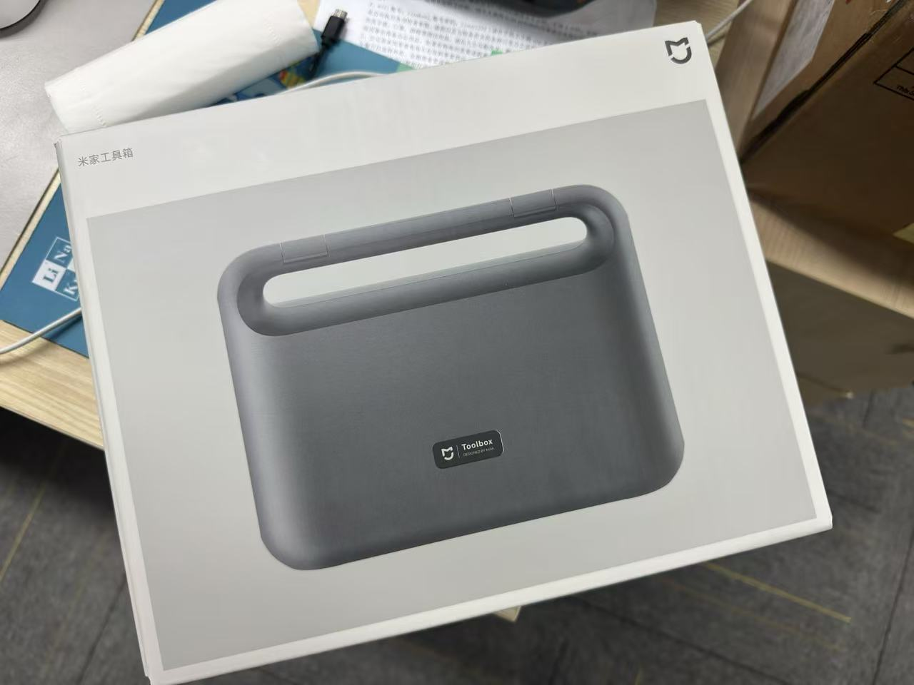

たたなこ🏳️⚧️🍥
@tatanakots
@manateelazycat 我顺丰企业账号寄东西，说是不含电池的电子产品，客户让加急改成特快运输，运费我们补，顺丰客服和我说不管含不含电池，电子产品都不让空运，我：😓

Andy Stewart
@manateelazycat
一早起来上班，什么都不好了。我感觉我就是个封号圣体
去年在推特上被老马封了，中间跟大家抽奖送礼品，被腾讯封了
但是万万没有想到被UPS封了，而且封号的理由，我也好无奈呀
前几个月我们不是在Kickstarter上做众筹吗？然后跟海外的这些用户抽奖，他们想要这个小米的电动工具箱 https://t.co/L8c0TsllWj